SoundBoxDesigned and built · 18 min read
A piano app that waits until you play it, so you can learn a song without reading music.
SoundBox is a free piano app I designed and built on my own. It lights up the keys to press, listens through the microphone, and does not move on until it hears the right notes.
- Role
- Design and build, solo
- Timeline
- August 2026, 10 commits over three days
- Why
- People who cannot read sheet music still want to play the songs they love
- Platform
- Android app and any web browser
- Stack
- React 19, TypeScript, Vite, Capacitor, Web Audio, Basic Pitch
- Status
- Working app, version 1.1 on Android. Tested by me in a browser and an Android emulator, not yet with learners

In short
- The problem: to play a song you love, you usually have to decode a page of sheet music, or keep up with a lesson that moves on whether you are ready or not.
- What I built: a free app for Android and the browser. Every song comes at three levels, the keys light up on a picture of a piano, and the app listens and waits for you.
- The key idea: the hard part was knowing when not to move on. Room noise, a hummed tune and a chord it cannot read must not count, so the app says “listening…” instead of guessing.
- Where it stands: a working app, built in three days. There is no independent test of how well it recognises notes on real pianos, and no measured learning results.
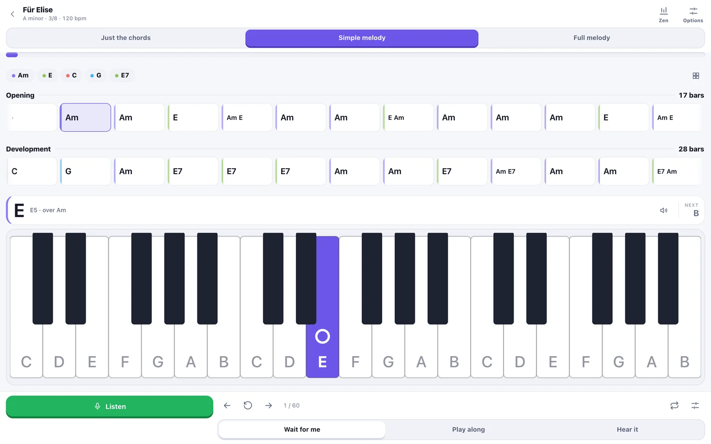
01 Why I built it
Most songs are written down for people who can read music
SoundBox is for someone who wants to play a song they love, well enough to sing along or to record light background music, and who cannot read sheet music.
Today that means searching the internet for the notes, finding a page of notation, and trying to work the whole page out onto the keyboard at once. A timed lesson adds a clock on top. I treated time pressure as the most discouraging thing for a beginner, and designed against it.
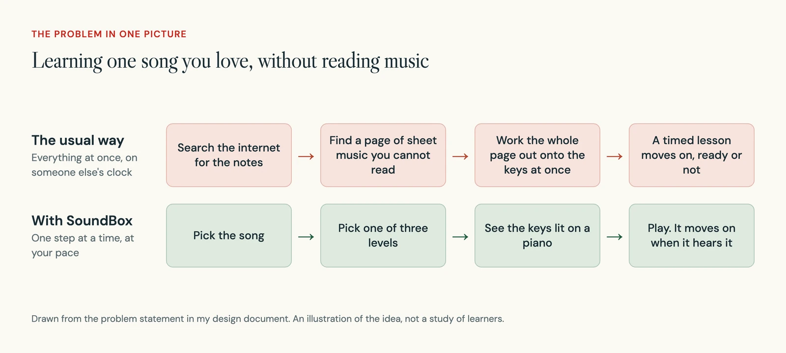
Before drawing any screen, I wrote down four rules the app could not break.
| Rule | What it meant |
|---|---|
| Free forever | No paid services and no licensed content. Everything runs on the device. |
| Not scary | No staff notation and no key signatures. Large type and few things on screen. |
| Works offline | The songs and the listening all work with no network. |
| Accessible | Readable contrast, touch targets at least 48 pixels on a touchscreen, labels for screen readers, and never colour alone. |
02 How it works
Pick a song, pick a level, play what lights up
Six songs come with the app: five traditional or classical tunes and one Hindi film song. You can add your own. Each row in the library shows the key, the number of chords and how hard the easiest level is.
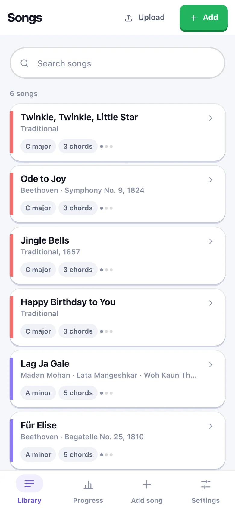
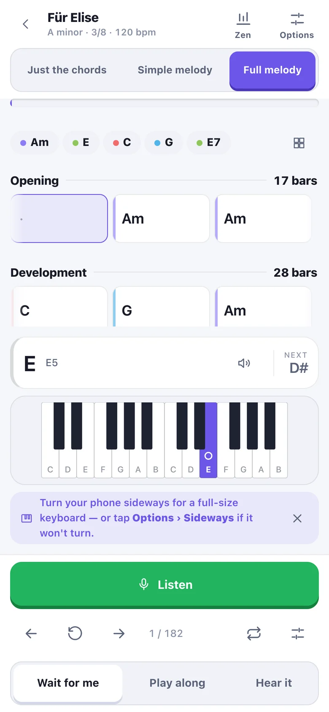
The idea that holds the product together is the song format. A song stores one set of chords and three ways to play it, from easy to hard. You start where you can and move up when the song stops being hard.
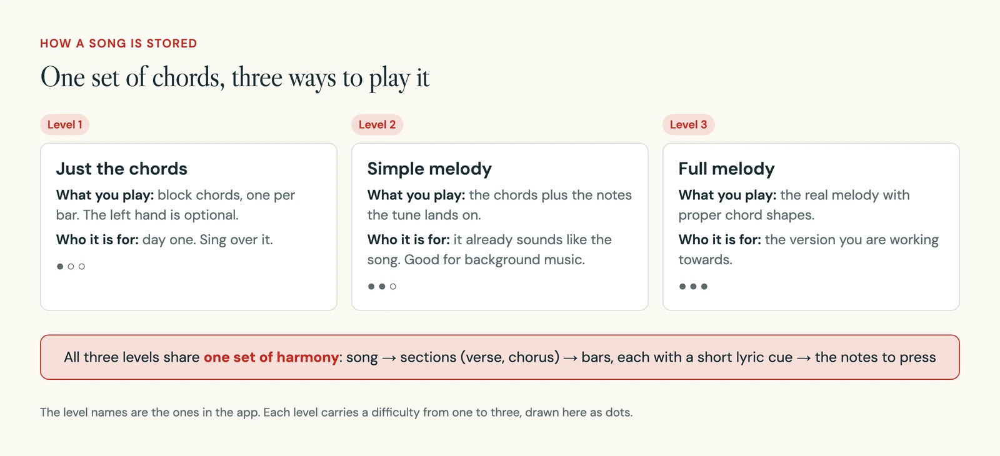
Then the loop. The screen shows what to play, you play it on your own piano, and the app listens. In the default mode, called Wait for me, nothing moves until it hears the right thing.
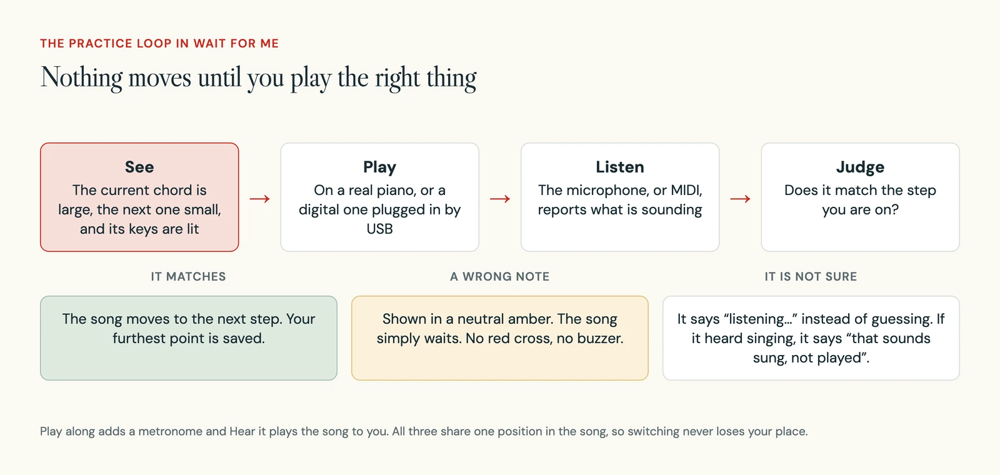
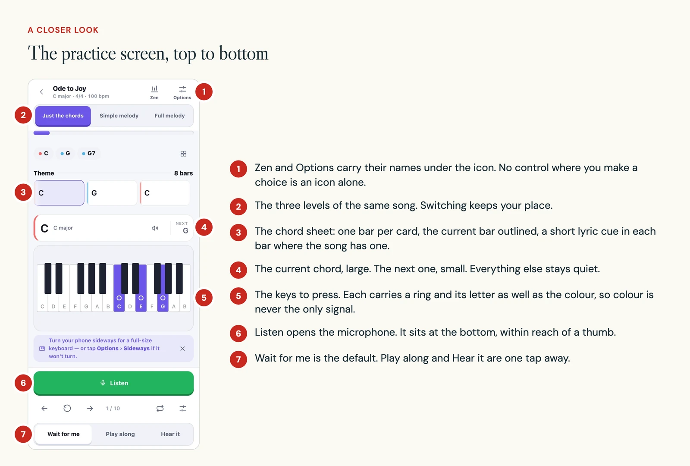
03 Decision 1
The song waits for you, and tells you when it is unsure
What you see: Wait for me is the default. There is no clock. A wrong note shows in a neutral amber and the song simply stays where it is. There is no red cross and no buzzer.
When the microphone is open, a strip at the bottom says what the app is doing: “warming up…” while the detector loads, “getting used to the room…” for the first second, then “listening…” until it hears something it believes.
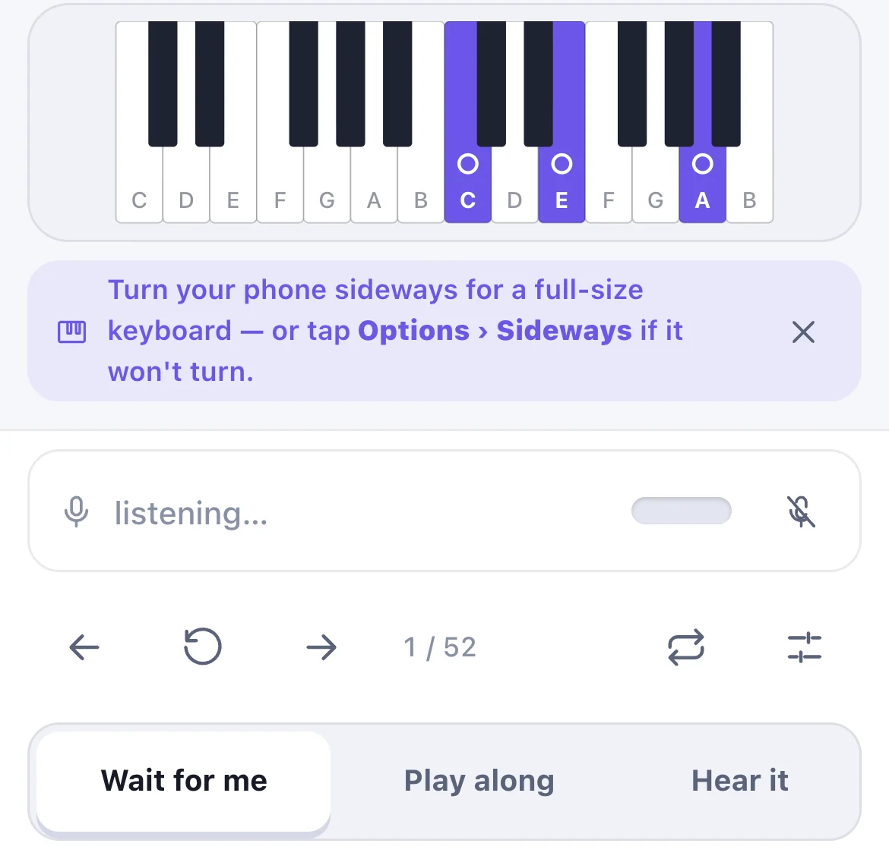
In the build: the three modes, Wait for me, Play along and Hear it, share one position in the song, so switching never loses your place. Pause exists only in the timed modes. In Wait for me the player is the clock, so there is nothing to pause, and the space bar plays the current chord instead.
The listening strip names each refusal. “That sounds sung, not played” is something you can act on. Silence looks exactly like a broken microphone.
Any mode can loop a section, because nobody practises by playing a song from the top again and again. They play the eight bars they keep fumbling.
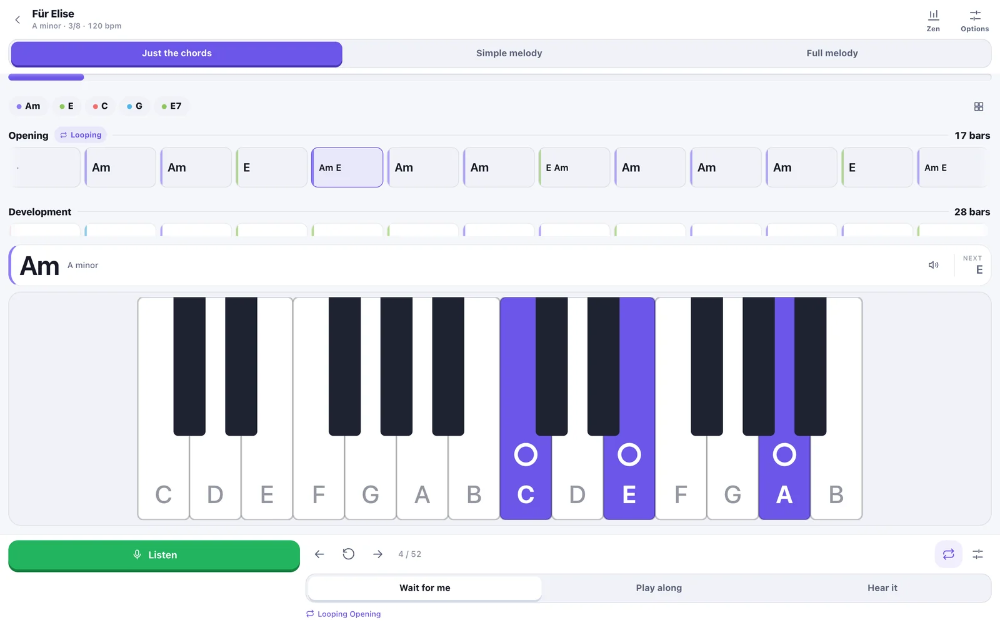
04 Decision 2
It listens only for a piano, and never sends the sound anywhere
What you see: one Listen button, and in Settings a few plain choices. How noisy is your room? Only listen for a piano? Use a connected digital piano?
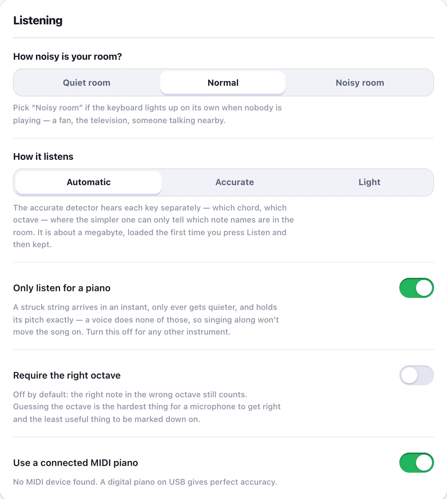
In the build: my first version had one check. It ignored sounds that were too quiet. Everything after that worked on a pattern with the volume taken out. A fan, a conversation or an empty room all came back looking like music, and the on-screen piano lit up end to end.
So I put five gates between the microphone and the song. Each catches a different kind of sound that is not someone playing.
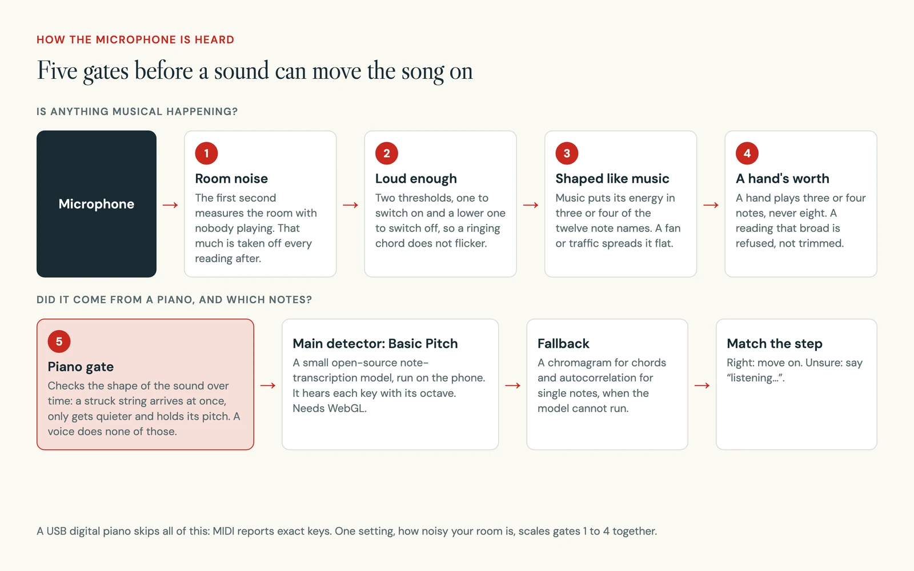
Next, I tested the chord detector against a synthesised grand piano, and it was not good enough. A chromagram, the detector's sum of sound in each of the 12 note names, cannot tell octaves apart.
| What was played | What the first detector heard | What the model heard |
|---|---|---|
| C major with two hands | C only | C2 C3 C4 E4 G4, with the octaves right |
| A minor 7 with the sustain pedal down | A only | A2 A3 C4 E4 G4, with the octaves right |
| A melody note over a ringing chord | A C two octaves below anything played | The right note, C5 |
A small fix solved the first two rows for the old detector. The third could not be fixed that way, so I added Basic Pitch, an open-source note-transcription model from Spotify. It has about 17,000 parameters, and its 725 KB of weights ship inside the app. The old detector stays as the fallback for phones that cannot run the model.
Then I found the app was happy to be sung to. Humming the tune moved the song on exactly as playing did. The piano gate closes that gap by looking at how a sound behaves over time: a struck string arrives at once, only gets quieter and holds its pitch. A voice fades in, holds, and wobbles.
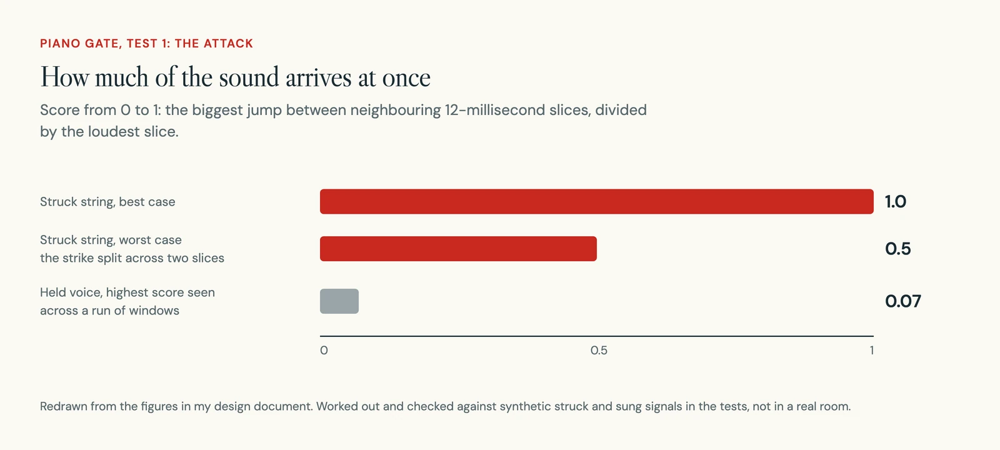
05 Decision 3
The keyboard gets the width, even when the phone refuses to turn
What you see: held upright, a phone shows two octaves that follow the notes you need. Turned sideways, the chord sheet goes and the keys fill the screen. Zen mode strips the screen down to the keys and the notes falling towards them.
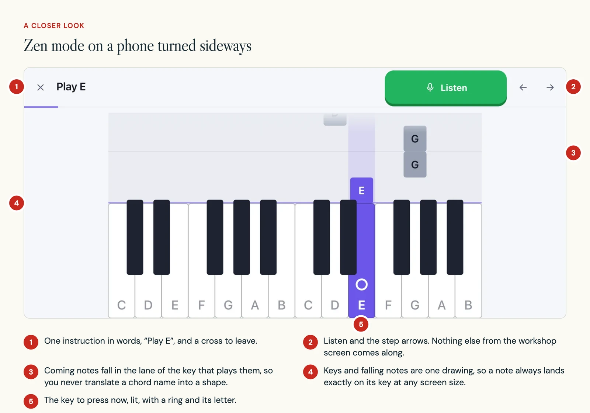
In the build: three octaves on an upright phone made each key barely wider than a fingernail. So upright phones get fewer octaves instead of smaller keys. The two-octave window stays still unless the next notes fall outside it, because a keyboard that moves every bar slides out from under the hand you are matching it to.
The Android app first shipped locked to portrait. I unlocked it, then found that many people keep auto-rotate switched off, so turning the phone did nothing. I added a sideways button that tries three routes in turn.
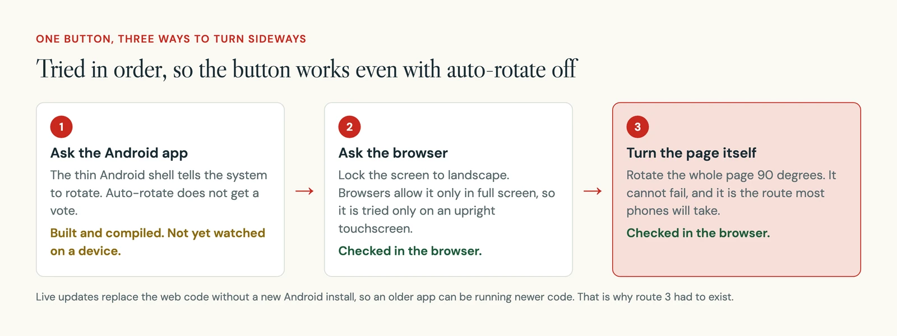
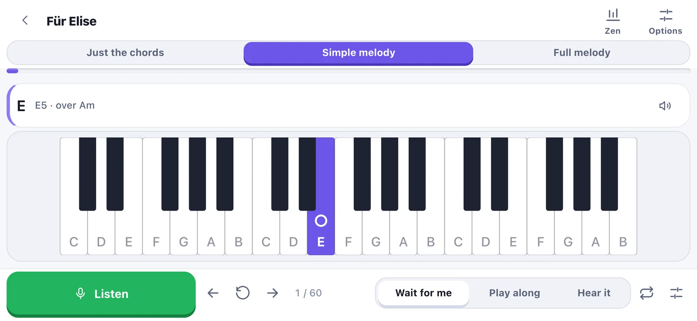
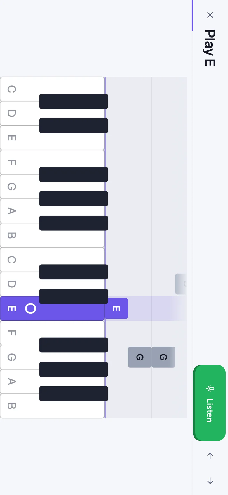
Zen mode only works if a falling note sits exactly over its key at every screen size. Two separate drawings would each scale on their own and drift apart at some sizes, so the keys and the notes are one drawing. Only one thing moves: the group of notes slides down as a single piece. The screen also stays awake on the practice screen, because minutes of looking without touching is exactly what a phone reads as “they have walked away”.
06 Decision 4
Round and colourful again, but every colour has one job
What you see: chunky rounded buttons that sit on a darker lip and press down. Four colours, each with one meaning. Violet is the app and the note you are asked to play. Green is correct and every button that moves you forward. Amber is the streak and anything earned. Coral only ever deletes something.
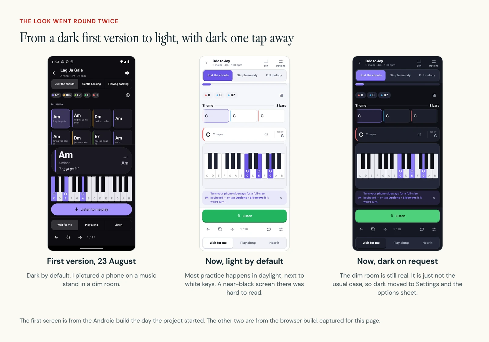
In the build: the look went round twice. My first pass had pill-shaped buttons and large flat areas of violet. I rejected it because it read like software for children. So I went square and neutral.
That stopped it looking like a toy. It also left six unlabelled icons in the practice screen's header, three filter controls in front of six songs, and option labels cut down to “Se… / Bal… / Str…”. No first-time user could read that screen.
So it went round again, on one condition: every shape and colour must carry information. Rounded corners with a lip mean you can press it. Cards have no lip, because you cannot press a card. I kept two things from the square version: a row per song in the library, and fixed-width digits so numbers do not jitter as they change.
The default theme flipped the same way. I first chose dark, for a phone on a music stand in a dim room. But most practice happens in daylight next to white keys, where a near-black screen was hard to read. Light is now the default and dark is one tap away.
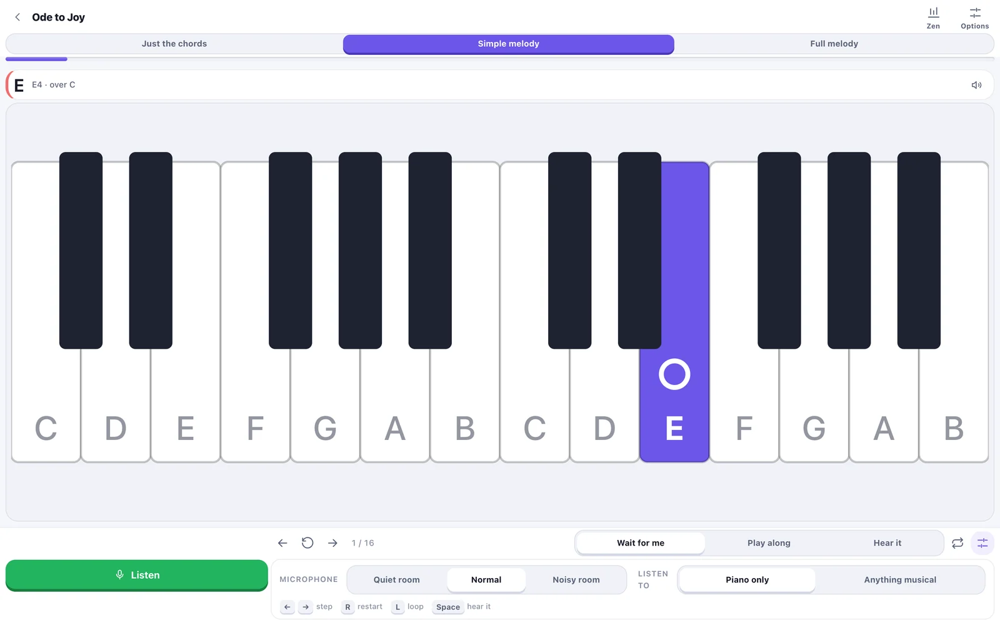
07 Decision 5
It keeps score, but nothing can be taken away from you
What you see: a daily streak, points for ground you cover, and badges. With nothing played yet, the page says “No streak yet” and how to start one.
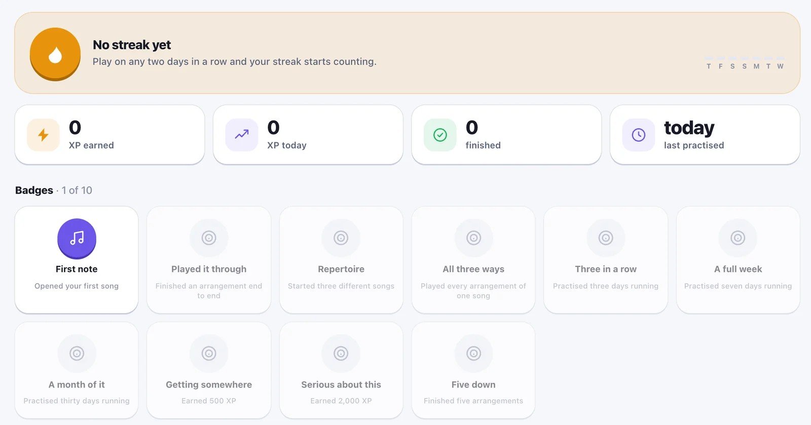
In the build: the first version refused to keep score at all, because a streak counter turns a busy fortnight into a punishment. That reason did not go away, so the scoring now follows four rules.
- A streak survives one missed day. It breaks only after a full day with nothing played.
- Points only ever go up. There is no decay, no weekly reset and no league.
- Badges are for things you did, such as playing every level of one song, not for days you kept up.
- Nothing is ever shown in red.
Points come from new ground: two for each step you had not reached before, and fifty the first time you finish a level. Your furthest point never moves back, because stepping back to drill a hard bar is the right way to practise. Points live apart from your practice history, so clearing the history does not take them away.
08 Your own songs
An upload opens in the editor, never straight into your library
You can type a song bar by bar, or bring one in: a MusicXML file from MuseScore, a ChordPro file, a plain-text chord sheet, or a SoundBox export. Chords written above a line of words are matched to the syllable under them, so an imported sheet is still singable.
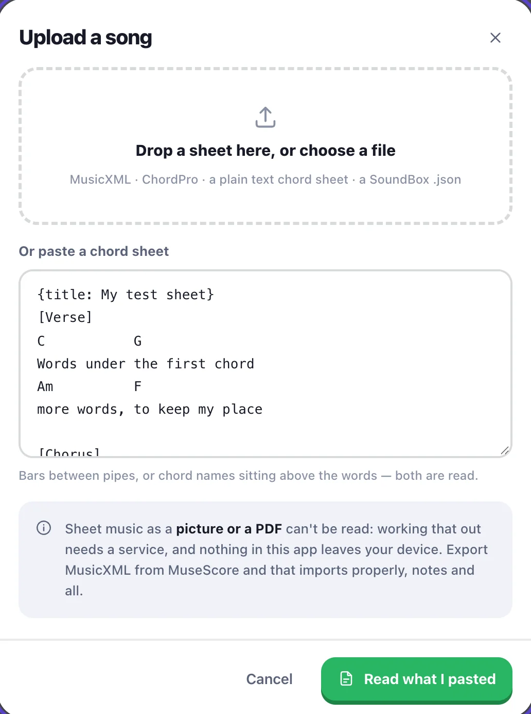
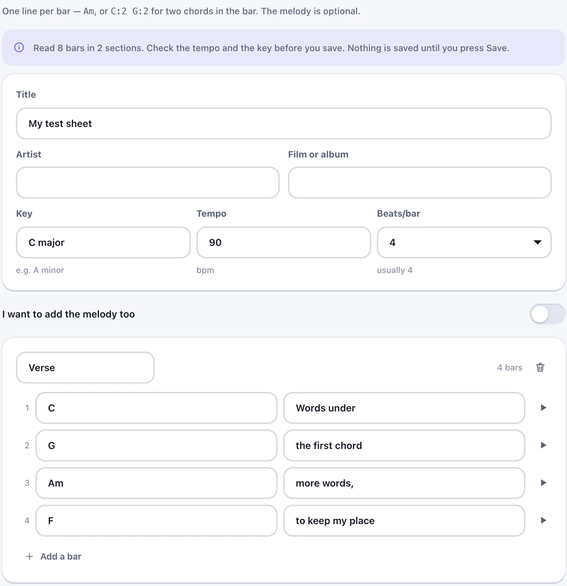
In the build: importers get things wrong, and a wrong song that saved itself is worse than one you were asked to check. So every upload lands in the editor first.
Pictures and PDFs are refused with the reason. Reading notes off an image needs an online service, and nothing in this app leaves the device. A message that only says “unsupported” teaches nobody anything.
Most sheet music has no chord names, so in the last change I made the app read them back out of the notes. It weighs each note by how long it sounds, whether it falls on a strong beat and how low it is. Two limits were set by tests failing. The cost of an extra chord note had to double before a quick passing F stopped turning a G bar into G7. The confidence cut-off had to rise to 0.6 before a plain run of C, D, E, F stopped coming back as F major 7.
09 The build
One codebase for the phone and the laptop, with the music maths tested on its own
The same web app runs in a browser and inside a thin Android shell. A laptop propped on the piano is a real way to use it, not an afterthought.
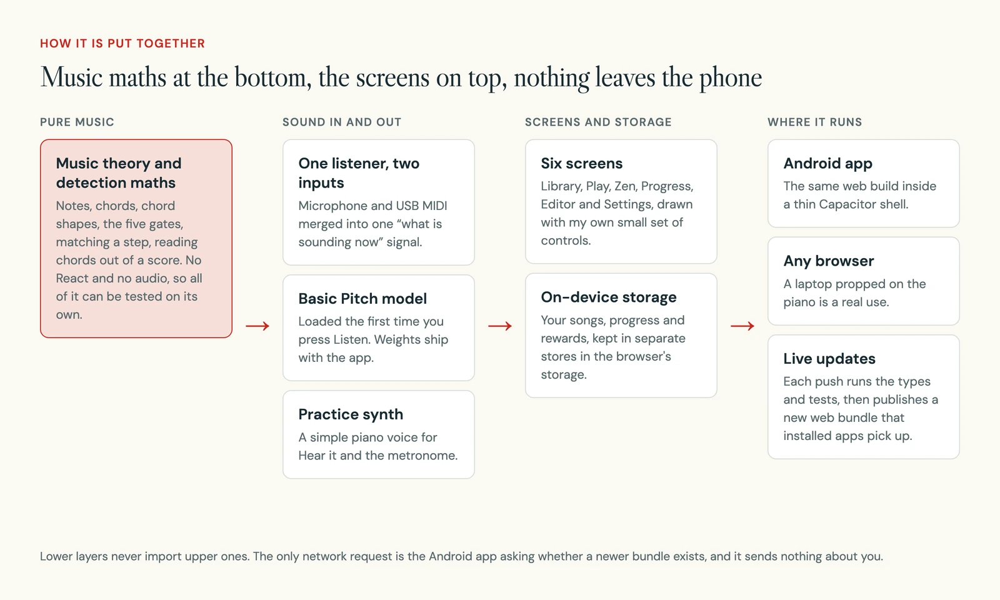
| Part | What I used |
|---|---|
| App | React 19, TypeScript and Vite |
| Android | Capacitor 8, a thin native shell around the web app |
| Sound | Web Audio for the microphone and the practice synth, Web MIDI for digital pianos |
| Note detection | Basic Pitch on TensorFlow.js, with my own chromagram detector as the fallback |
| Interface | Plain CSS and a small set of controls of my own |
| Updates | Capgo live updates, published by GitHub Actions after the types and tests pass |
I chose web technology for one reason: sound. Reading the microphone in real time is well documented in the browser and a chore of native code everywhere else, so I ruled out React Native and Flutter. I also started on Material UI and moved off it. It cost 310 KB in an app meant to work offline on a phone, and the practice screen is not made of Material parts. The rewrite halved the JavaScript.
- 10
- commits over three days, 23 to 25 August 2026
- 12
- test files
- 5
- gates between the microphone and the song
- 6
- songs that come with the app
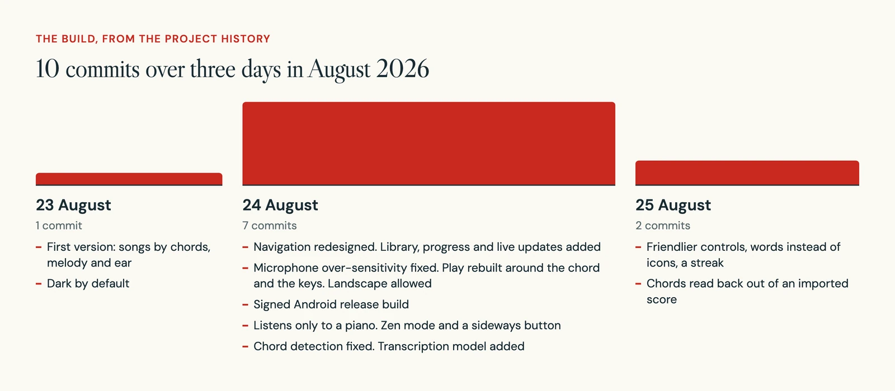
The tests run the detection maths against synthetic piano sounds, the noise gates against synthetic room noise, and the piano gate against synthetic struck, sung, droning and sharp spoken sounds. They also check the streak across a daylight-saving change.
The hardest problems were about sound and time, not screens.
| Problem | What went wrong, and what I changed |
|---|---|
| A doubled root | Playing C in both hands put far more energy in C than in E and G, which then fell under the cut-off (C 1.00, E 0.41, G 0.37 against 0.56). Compressing the loud end brought back all three notes. |
| Overtones | One low C also rings at G and E, so a simple detector reports a C major chord for a single key. The detector now damps each note's expected overtones first. |
| The same millisecond | Switching level saved two progress records at the same instant, and the library offered to resume the level you had just left. A counter now breaks the tie. A unit test caught it, not my eyes. |
| Old app, new code | Live updates can put new web code inside an older Android app. Every call to the native shell reports whether it worked, and each has a browser fallback. |
10 Accessibility
Sized for the device you touch, with colour never working alone
Sizing follows the kind of pointer, not the width of the window. With a mouse the controls are tight. On a touchscreen every target is at least 48 pixels. A narrow browser window is not a phone.
A lit key also carries a ring and its letter. Each level button has a sentence for screen readers, such as “Two chords, one per bar. Hold each one and let it ring.” When the level picker moves to its own row on a small screen, it moves rather than appearing twice, so a screen reader hears one choice and not two.
11 Where it stands
It works end to end, and has not met a real learner yet
SoundBox works from start to finish: browse, pick a level, follow the current bar, see the next keys, let the microphone listen, and move through the song. I checked it in a browser and on an Android 14 emulator, in both themes. There is a signed Android build, version 1.1.
These things are not established:
- There is no independent recognition benchmark. Detection is checked against synthetic piano sounds, not a real piano in a real room.
- There are no measured learning results, and no beginner has used it while I watched.
- The model's live path, from microphone to screen, has not yet run on real audio, and nobody has timed it on a phone.
- The Android shell's own rotation and keep-awake calls have not run on a device yet.
- Songs and progress stay on one device. There is no sync.
The screens on this page come from the browser build. The listening features need a microphone and a piano, so none of them shows a note being recognised.
12 What is next
Test it on a real piano, then with a real beginner
- Open “What can it hear?” in Settings on a real piano: check that the model starts, what delay it reports, and whether a two-handed chord lights the right keys.
- Try the piano gate in a real room at all three noise settings.
- Proposed study: watch a beginner learn one short passage in Wait for me, including how they recover when a note is missed.
- Proposed benchmark: test notes and chords across rooms, microphones and pianos, and report false steps forward apart from missed notes.
- Smaller features already planned: colour for left and right hand, and looping any range of bars rather than a whole section.
13 What I learned
A patient app has to be honest about what it hears
I set out to remove the clock, and that part was easy. The work was in what waiting asks of the listening. A song that waits is only patient if it moves on when you play and stays when you do not. Each wrong step forward or missed note breaks the promise.
I also learned to judge a style by whether it carries information. Rounded and colourful failed once and worked the second time. The shapes stayed similar. What changed was that every corner and colour now meant something.
Different starting points. One place to meet.